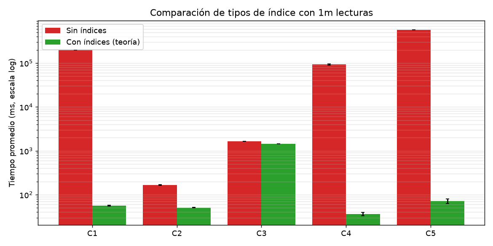
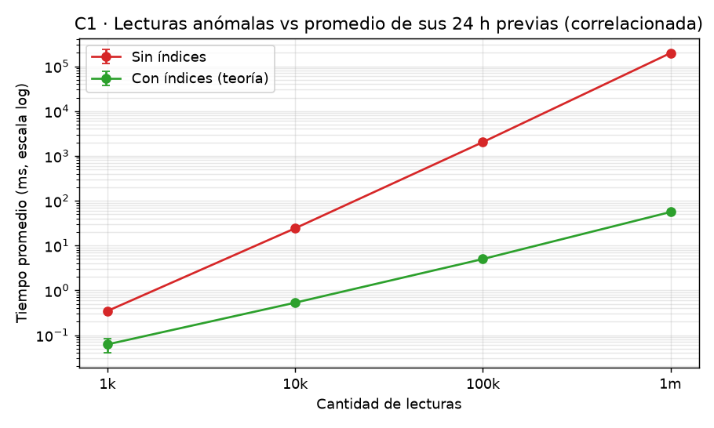
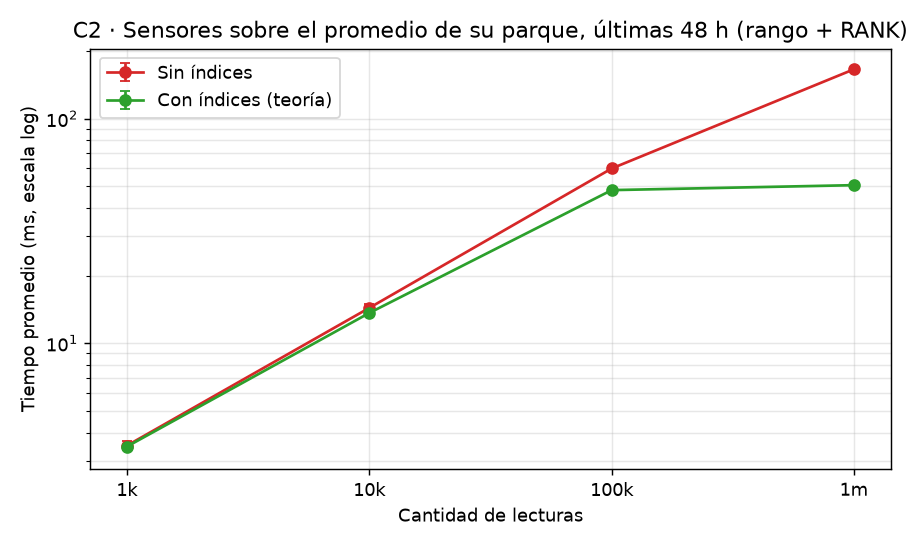
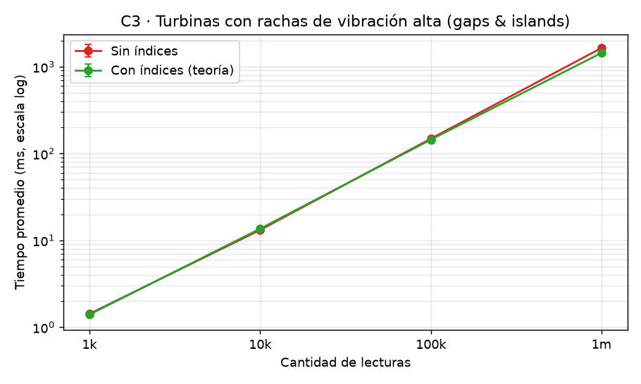
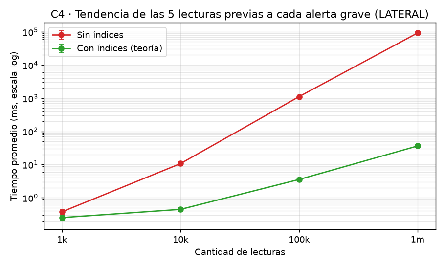
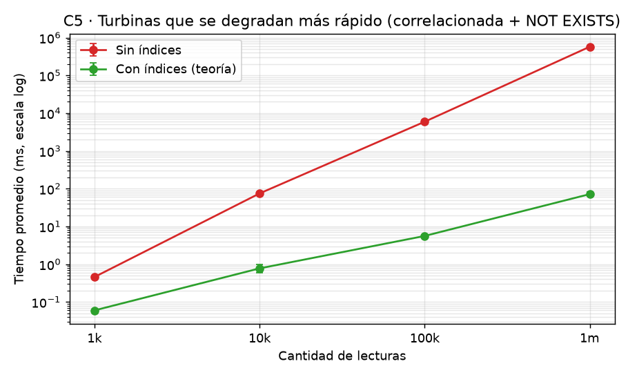
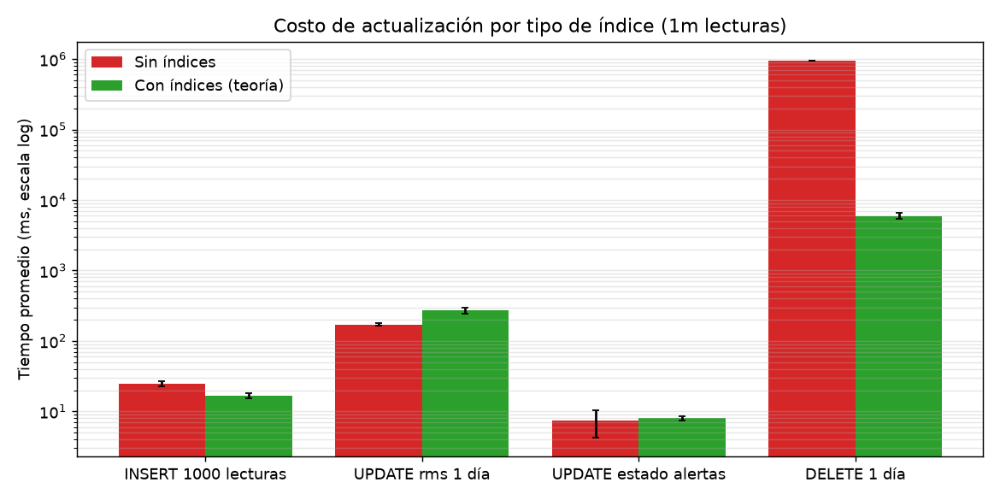
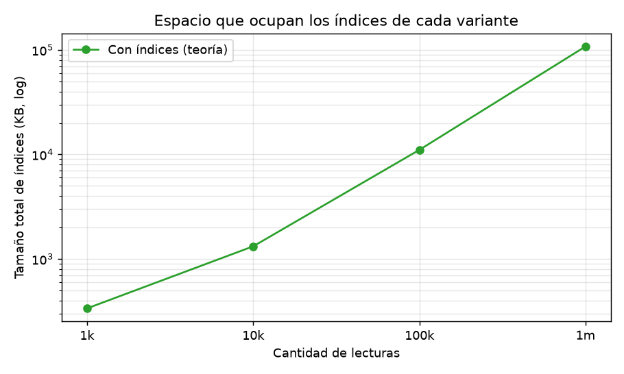

5 ejecuciones por medición (más 1 de calentamiento) · tiempo = Execution Time de
EXPLAIN (ANALYZE) · generado 2026-11-16 22:35


| Escala | Variante | Promedio (ms) | Desv. est. | vs sin | ¿Usó índice? | Veredicto | Acceso usado en el plan |
|---|---|---|---|---|---|---|---|
| 1k | Sin índices | 0.345 | 0.026 (n=5) | no | Seq Scan(lecturavibracion) | ||
| 1k | Con índices (teoría) | 0.062 | 0.022 (n=5) | -82.0% | sí | Mejora real | Bitmap Heap Scan(lecturavibracion); Bitmap Index Scan[idx_btree_lectura_rms]; Index Only Scan[idx_btree_lectura_sensor_fecha] |
| 10k | Sin índices | 24.185 | 0.775 (n=5) | no | Seq Scan(lecturavibracion) | ||
| 10k | Con índices (teoría) | 0.529 | 0.018 (n=5) | -97.8% | sí | Mejora real | Bitmap Heap Scan(lecturavibracion); Bitmap Index Scan[idx_btree_lectura_rms]; Index Only Scan[idx_btree_lectura_sensor_fecha] |
| 100k | Sin índices | 2027.956 | 150.035 (n=5) | no | Seq Scan(lecturavibracion) | ||
| 100k | Con índices (teoría) | 4.990 | 0.183 (n=5) | -99.8% | sí | Mejora real | Bitmap Heap Scan(lecturavibracion); Bitmap Index Scan[idx_btree_lectura_rms]; Index Only Scan[idx_btree_lectura_sensor_fecha] |
| 1m | Sin índices | 197557.994 | 0.000 (n=1) | no | Seq Scan(lecturavibracion) | ||
| 1m | Con índices (teoría) | 55.983 | 1.058 (n=5) | -100.0% | sí | Mejora real | Bitmap Heap Scan(lecturavibracion); Bitmap Index Scan[idx_btree_lectura_rms]; Index Only Scan[idx_btree_lectura_sensor_fecha] |

| Escala | Variante | Promedio (ms) | Desv. est. | vs sin | ¿Usó índice? | Veredicto | Acceso usado en el plan |
|---|---|---|---|---|---|---|---|
| 1k | Sin índices | 3.496 | 0.160 (n=5) | no | Seq Scan(lecturavibracion) | ||
| 1k | Con índices (teoría) | 3.462 | 0.108 (n=5) | -1.0% | sí | Empate: dentro del ruido | Index Only Scan[idx_btree_lectura_fecha] |
| 10k | Sin índices | 14.357 | 0.656 (n=5) | no | Seq Scan(lecturavibracion) | ||
| 10k | Con índices (teoría) | 13.629 | 0.443 (n=5) | -5.1% | sí | Empate: dentro del ruido | Index Only Scan[idx_btree_lectura_fecha] |
| 100k | Sin índices | 59.968 | 1.665 (n=5) | no | Seq Scan(lecturavibracion) | ||
| 100k | Con índices (teoría) | 48.034 | 0.738 (n=5) | -19.9% | sí | Mejora real | Index Only Scan[idx_btree_lectura_fecha] |
| 1m | Sin índices | 165.969 | 2.629 (n=5) | no | Seq Scan(lecturavibracion) | ||
| 1m | Con índices (teoría) | 50.538 | 0.584 (n=5) | -69.5% | sí | Mejora real | Index Only Scan[idx_btree_lectura_fecha] |

| Escala | Variante | Promedio (ms) | Desv. est. | vs sin | ¿Usó índice? | Veredicto | Acceso usado en el plan |
|---|---|---|---|---|---|---|---|
| 1k | Sin índices | 1.423 | 0.047 (n=5) | no | Seq Scan(lecturavibracion) | ||
| 1k | Con índices (teoría) | 1.395 | 0.073 (n=5) | -1.9% | no | Empate: el plan no usa índices | Seq Scan(lecturavibracion) |
| 10k | Sin índices | 13.153 | 0.324 (n=5) | no | Seq Scan(lecturavibracion) | ||
| 10k | Con índices (teoría) | 13.612 | 0.057 (n=5) | +3.5% | sí | Empate: dentro del ruido | Index Only Scan[idx_btree_lectura_sensor_fecha] |
| 100k | Sin índices | 148.430 | 0.863 (n=5) | no | Seq Scan(lecturavibracion) | ||
| 100k | Con índices (teoría) | 144.590 | 0.772 (n=5) | -2.6% | sí | Mejora real | Index Only Scan[idx_btree_lectura_sensor_fecha] |
| 1m | Sin índices | 1645.907 | 14.194 (n=5) | no | Seq Scan(lecturavibracion) | ||
| 1m | Con índices (teoría) | 1443.902 | 13.957 (n=5) | -12.3% | sí | Mejora real | Index Only Scan[idx_btree_lectura_sensor_fecha] |

| Escala | Variante | Promedio (ms) | Desv. est. | vs sin | ¿Usó índice? | Veredicto | Acceso usado en el plan |
|---|---|---|---|---|---|---|---|
| 1k | Sin índices | 0.376 | 0.054 (n=5) | no | Seq Scan(alertamantenimiento); Seq Scan(lecturavibracion) | ||
| 1k | Con índices (teoría) | 0.252 | 0.041 (n=5) | -33.1% | sí | Mejora real | Seq Scan(alertamantenimiento); Index Only Scan[idx_btree_lectura_sensor_fecha] |
| 10k | Sin índices | 10.704 | 0.419 (n=5) | no | Seq Scan(alertamantenimiento); Seq Scan(lecturavibracion) | ||
| 10k | Con índices (teoría) | 0.445 | 0.012 (n=5) | -95.8% | sí | Mejora real | Seq Scan(alertamantenimiento); Index Only Scan[idx_btree_lectura_sensor_fecha] |
| 100k | Sin índices | 1114.825 | 20.528 (n=5) | no | Seq Scan(alertamantenimiento); Seq Scan(lecturavibracion) | ||
| 100k | Con índices (teoría) | 3.552 | 0.106 (n=5) | -99.7% | sí | Mejora real | Seq Scan(alertamantenimiento); Index Only Scan[idx_btree_lectura_sensor_fecha] |
| 1m | Sin índices | 92572.687 | 2736.854 (n=5) | no | Seq Scan(alertamantenimiento); Seq Scan(lecturavibracion) | ||
| 1m | Con índices (teoría) | 36.330 | 2.968 (n=5) | -100.0% | sí | Mejora real | Seq Scan(alertamantenimiento); Index Only Scan[idx_btree_lectura_sensor_fecha] |

| Escala | Variante | Promedio (ms) | Desv. est. | vs sin | ¿Usó índice? | Veredicto | Acceso usado en el plan |
|---|---|---|---|---|---|---|---|
| 1k | Sin índices | 0.458 | 0.007 (n=5) | no | Seq Scan(alertamantenimiento); Seq Scan(lecturavibracion); Seq Scan(alertaorden) | ||
| 1k | Con índices (teoría) | 0.060 | 0.002 (n=5) | -86.9% | sí | Mejora real | Seq Scan(alertamantenimiento); Index Only Scan[idx_btree_lectura_sensor_fecha]; Seq Scan(alertaorden) |
| 10k | Sin índices | 74.821 | 0.203 (n=5) | no | Seq Scan(alertamantenimiento); Seq Scan(lecturavibracion); Seq Scan(alertaorden) | ||
| 10k | Con índices (teoría) | 0.776 | 0.191 (n=5) | -99.0% | sí | Mejora real | Seq Scan(alertamantenimiento); Index Only Scan[idx_btree_lectura_sensor_fecha]; Seq Scan(alertaorden) |
| 100k | Sin índices | 5933.070 | 37.928 (n=5) | no | Seq Scan(alertamantenimiento); Seq Scan(lecturavibracion); Seq Scan(alertaorden) | ||
| 100k | Con índices (teoría) | 5.606 | 0.072 (n=5) | -99.9% | sí | Mejora real | Seq Scan(alertamantenimiento); Index Only Scan[idx_btree_lectura_sensor_fecha]; Seq Scan(alertaorden) |
| 1m | Sin índices | 575110.453 | 0.000 (n=1) | no | Seq Scan(alertamantenimiento); Seq Scan(lecturavibracion); Seq Scan(alertaorden) | ||
| 1m | Con índices (teoría) | 71.844 | 8.848 (n=5) | -100.0% | sí | Mejora real | Seq Scan(alertamantenimiento); Index Only Scan[idx_btree_lectura_sensor_fecha]; Seq Scan(alertaorden) |
Cada operación se ejecuta y se deshace con ROLLBACK.

| Escala | Operación | Sin índices (ms) | Con índices (teoría) (ms) |
|---|---|---|---|
| 1m | INSERT 1000 lecturas | 24.96 | 16.72 |
| 1m | UPDATE rms 1 día | 170.35 | 271.60 |
| 1m | UPDATE estado alertas | 7.34 | 7.98 |
| 1m | DELETE 1 día | 958585.39 | 5956.11 |

| Escala | Variante | Índice | Tabla | Tamaño (KB) |
|---|---|---|---|---|
| 1k | Con índices (teoría) | idx_btree_lectura_sensor_fecha | lecturavibracion | 56 |
| 1k | Con índices (teoría) | idx_btree_lectura_rms | lecturavibracion | 40 |
| 1k | Con índices (teoría) | idx_btree_lectura_fecha | lecturavibracion | 64 |
| 1k | Con índices (teoría) | idx_hash_alerta_nivel | alertamantenimiento | 32 |
| 1k | Con índices (teoría) | idx_hash_alertaorden_alerta | alertaorden | 32 |
| 1k | Con índices (teoría) | idx_hash_sensor_componente | sensorvibracion | 48 |
| 1k | Con índices (teoría) | idx_hash_componente_turbina | componenteturbina | 32 |
| 1k | Con índices (teoría) | idx_hash_turbina_parque | turbina | 32 |
| 10k | Con índices (teoría) | idx_btree_lectura_sensor_fecha | lecturavibracion | 416 |
| 10k | Con índices (teoría) | idx_btree_lectura_rms | lecturavibracion | 240 |
| 10k | Con índices (teoría) | idx_btree_lectura_fecha | lecturavibracion | 488 |
| 10k | Con índices (teoría) | idx_hash_alerta_nivel | alertamantenimiento | 32 |
| 10k | Con índices (teoría) | idx_hash_alertaorden_alerta | alertaorden | 32 |
| 10k | Con índices (teoría) | idx_hash_sensor_componente | sensorvibracion | 48 |
| 10k | Con índices (teoría) | idx_hash_componente_turbina | componenteturbina | 32 |
| 10k | Con índices (teoría) | idx_hash_turbina_parque | turbina | 32 |
| 100k | Con índices (teoría) | idx_btree_lectura_sensor_fecha | lecturavibracion | 3984 |
| 100k | Con índices (teoría) | idx_btree_lectura_rms | lecturavibracion | 2224 |
| 100k | Con índices (teoría) | idx_btree_lectura_fecha | lecturavibracion | 4688 |
| 100k | Con índices (teoría) | idx_hash_alerta_nivel | alertamantenimiento | 32 |
| 100k | Con índices (teoría) | idx_hash_alertaorden_alerta | alertaorden | 32 |
| 100k | Con índices (teoría) | idx_hash_sensor_componente | sensorvibracion | 48 |
| 100k | Con índices (teoría) | idx_hash_componente_turbina | componenteturbina | 32 |
| 100k | Con índices (teoría) | idx_hash_turbina_parque | turbina | 32 |
| 1m | Con índices (teoría) | idx_btree_lectura_sensor_fecha | lecturavibracion | 39296 |
| 1m | Con índices (teoría) | idx_btree_lectura_rms | lecturavibracion | 21808 |
| 1m | Con índices (teoría) | idx_btree_lectura_fecha | lecturavibracion | 46304 |
| 1m | Con índices (teoría) | idx_hash_alerta_nivel | alertamantenimiento | 616 |
| 1m | Con índices (teoría) | idx_hash_alertaorden_alerta | alertaorden | 80 |
| 1m | Con índices (teoría) | idx_hash_sensor_componente | sensorvibracion | 48 |
| 1m | Con índices (teoría) | idx_hash_componente_turbina | componenteturbina | 32 |
| 1m | Con índices (teoría) | idx_hash_turbina_parque | turbina | 32 |